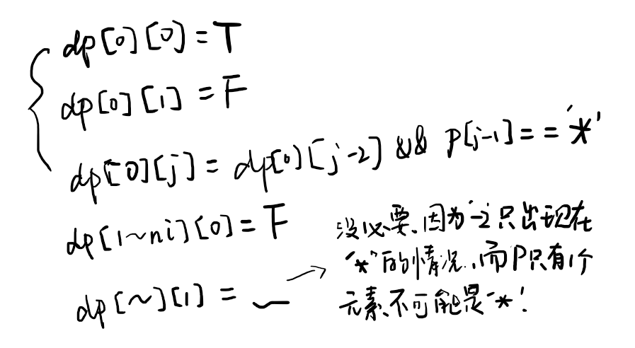

Given an input string (s) and a pattern (p), implement regular expression matching with support for ‘.’ and ‘*’.
‘.’ Matches any single character.
‘*’ Matches zero or more of the preceding element.
The matching should cover the entire input string (not partial).
Note:
s could be empty and contains only lowercase letters a-z.
p could be empty and contains only lowercase letters a-z, and characters like . or *.
Example 1:
Input:
s = “aa”
p = “a”
Output: false
Explanation: “a” does not match the entire string “aa”.
Example 2:
Input:
s = “aa”
p = “a*”
Output: true
Explanation: ‘*’ means zero or more of the preceding element, ‘a’. Therefore, by repeating ‘a’ once, it becomes “aa”.
Example 3:
Input:
s = “ab”
p = “.“
Output: true
Explanation: “.“ means “zero or more (*) of any character (.)”.
Example 4:
Input:
s = “aab”
p = “cab”
Output: true
Explanation: c can be repeated 0 times, a can be repeated 1 time. Therefore, it matches “aab”.
Example 5:
Input:
s = “mississippi”
p = “misisp*.”
Output: false
来源：力扣（LeetCode）
链接：https://leetcode-cn.com/problems/regular-expression-matching
著作权归领扣网络所有。商业转载请联系官方授权，非商业转载请注明出处。
框架
1 | class Solution { |
1. 直接遍历
O(n)
失败了……
本来觉得还算简单来着，但是这个*着实气人，它想匹配多少就匹配多少，连a*a都有。。
下面的代码是错的，没有考虑这种智障输入。
1 | class Solution { |
2. 动态规划
因为不能确定*到底匹配多少个前一个字符，所以可以都测试一下。
设bool dp[i][j]用来代表s的前i个字符和p的前j个字符的匹配关系，也就是s[0 ~ i-1]和p[0 ~ j-1]
那么dp[i][j]就可以依靠前面dp[][]的True/False决定，表示后半部分匹配，结果由前半部分的匹配情况确定。
以下讨论dp[i][j]，即s[0 ~ i-1]与p[0 ~ j-1]的匹配情况。
s[i-1] == p[j-1]dp[i][j] = dp[i-1][j-1]
说明p中肯定是字母，并且二者在该位上匹配，所以s[0 ~ i-1], p[0 ~ j-1]这部分是否匹配取决于dp[i-1][j-1]。p[j-1] == '.'dp[i][j] = dp[i-1][j-1].可以匹配任何字母，因此二者在该位上也是匹配的，所以如上。p[j-1] == '*'*可以匹配0次或多(>0)次在*左侧的那个字符。s[i-1] != p[j-1-1] && p[j-1-1] != '.'dp[i][j] = dp[i][j-2]
无法匹配，只能匹配0次。else / s[i-1] == p[j-1-1] || p[j-1-1] == '.'
可以匹配，可能匹配0次或多(>0)次。- 匹配0次
dp[i][j] = dp[i][j-2]
即便s[i-1] == p[j-1-1]也是有可能匹配0次的，比如s = abc, p = 'abcc*'。
匹配0次相当于这个字符和*都不存在了，因此跳过这两个字符，如s = ab, p = abc* - 匹配多(>0)次
dp[i][j] = dp[i-1][j]
匹配k次依赖于匹配k-1次，后者又依赖于k-2次，因此最终就变成了匹配0次，所以步骤就是依赖于dp[i-1][j]
- 匹配0次
else / s[i-1] != p[j-1] && p[j-1] != '.' && p[j-1] != '*'
dp[i][j] = false
不匹配。
初始化：

1 | class Solution { |